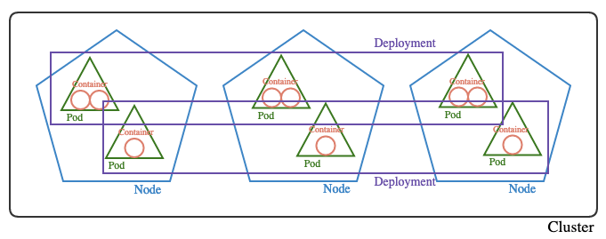

Discover Cluster (ipynb)
Contents
Discover Cluster (ipynb)¶

Install Dependencies¶
Install the dependencies ipywidgets and kubectl. Skip accordingly if they had already been installed.
# install ipywidgets
!pip3 install ipywidgets
# install kubectl
!gcloud components install kubectl --quiet
Imports and Configuration¶
import ipywidgets as widgets
import json
import os
from IPython.display import HTML, display
# extend width of widgets
display(HTML('''<style>
.widget-label { min-width: 18ex !important; font-weight:bold; }
</style>'''))
# extend width of cells
display(HTML("<style>.container { width:100% !important; }</style>"))
display(HTML("<style>.output_result { max-width:100% !important; }</style>"))
# [OPTIONAL] authenticate using your service account
!gcloud auth activate-service-account --key-file <json_key_file>
Define Environment Variables¶
Specify the following information
Fields |
Description |
|---|---|
|
Project id of target project that contains the k8s cluster |
|
Name of k8s cluster |
|
Type of k8s cluster (i.e. Regional or Zonal) |
# create text boxes for user input
src_project = widgets.Text(description = "Source Project: ", disabled=False)
cluster_name = widgets.Text(description = "Cluster Name: ", disabled=False)
cluster_type = widgets.Dropdown(options=['Regional', "Zonal"], value='Zonal', description="Cluster Type: ", disabled=False)
display(src_project, cluster_name, cluster_type)
If Cluster Type is Regional, specify the Cluster Region (e.g. asia-southeast1).
Else, if Cluster Type is Zonal, specify the Cluster Zone (e.g. asia-southeast1-b).
# create text boxes for user input
if cluster_type.value == 'Regional':
cluster_region = widgets.Text(description = "Cluster Region: ", disabled=False)
display(cluster_region)
elif cluster_type.value == 'Zonal':
cluster_zone = widgets.Text(description = "Cluster Zone: ", disabled=False)
display(cluster_zone)
# store user input in environment variables for use in subsequent comamnds
os.environ['SRC_PROJECT'] = src_project.value
os.environ['CLUSTER_NAME'] = cluster_name.value
if cluster_type.value == 'Regional':
os.environ['CLUSTER_REGION'] = cluster_region.value
elif cluster_type.value == 'Zonal':
os.environ['CLUSTER_ZONE'] = cluster_zone.value
Connect to Cluster¶
if cluster_type.value == 'Regional':
!gcloud container clusters get-credentials $CLUSTER_NAME --region $CLUSTER_REGION --project $SRC_PROJECT
elif cluster_type.value == 'Zonal':
!gcloud container clusters get-credentials $CLUSTER_NAME --zone $CLUSTER_ZONE --project $SRC_PROJECT
List All¶
Append kubectl commands below with --namespace <namespace> to filter resource by namespace or --all-namespaces to include all namespaces
!kubectl get all --all-namespaces
List & Describe Nodes¶
# list nodes
!kubectl get nodes -o wide --all-namespaces
# sample output
# NAME STATUS VERSION OS-IMAGE CONTAINER-RUNTIME
# gke-node-1 Ready v1.16.15-gke.6000 Container-Optimized OS from Google docker://19.3.1
# gke-node-2 Ready v1.16.15-gke.6000 Container-Optimized OS from Google docker://19.3.1
# gke-node-3 Ready v1.16.15-gke.6000 Container-Optimized OS from Google docker://19.3.1
# gke-node-4 Ready v1.19.6-gke.600 Container-Optimized OS from Google containerd://1.4.1
# gke-node-5 Ready v1.19.6-gke.600 Container-Optimized OS from Google containerd://1.4.1
# gke-node-6 Ready v1.19.6-gke.600 Container-Optimized OS from Google containerd://1.4.1
Take special note of the container runtime (
CONTAINER-RUNTIMEfield), which determines how the filesystem can be mounted for analysis
# describe specific node
!kubectl describe node <node_name>
# abstract of sample output
# ...
# CreationTimestamp: Thu, 29 Jul 2021 05:39:00 +0000
# ...
# Non-terminated Pods: (9 in total)
# Namespace Name CPU Requests CPU Limits Memory Requests Memory Limits Age
# --------- ---- ------------ ---------- --------------- ------------- ---
# default nginx-deployment-b4db97b7f-j9hmv 0 (0%) 0 (0%) 0 (0%) 0 (0%) 40m
# kube-system event-exporter-gke-67986489c8-jx5wj 0 (0%) 0 (0%) 0 (0%) 0 (0%) 25h
# kube-system fluentbit-gke-gwhdf 100m (10%) 0 (0%) 200Mi (7%) 500Mi (17%) 25h
# kube-system gke-metrics-agent-vkn7p 3m (0%) 0 (0%) 50Mi (1%) 50Mi (1%) 25h
# kube-system kube-dns-autoscaler-58cbd4f75c-zv24d 20m (2%) 0 (0%) 10Mi (0%) 0 (0%) 25h
# kube-system kube-proxy-gke-cluster-1-default-pool-fa6804d8-5x10 100m (10%) 0 (0%) 0 (0%) 0 (0%) 25h
# kube-system metrics-server-v0.3.6-6c47ffd7d7-cfbwh 48m (5%) 143m (15%) 105Mi (3%) 355Mi (12%) 25h
# kube-system pdcsi-node-t2pww 0 (0%) 0 (0%) 20Mi (0%) 100Mi (3%) 25h
# kube-system stackdriver-metadata-agent-cluster-level-58855749c5-s9bbz 98m (10%) 48m (5%) 202Mi (7%) 202Mi (7%) 25h
# ...
Take special note of
CreationTimestampandNon-terminated Podsin nonkube-systemnamespace
List & Describe Deployments¶
# list deployments
!kubectl get deployments -o wide --all-namespaces
# sample output
# NAME READY UP-TO-DATE AVAILABLE AGE CONTAINERS IMAGES SELECTOR
# nginx-deployment 3/3 3 3 5m2s web-container nginx app=nginx
# describe specific deployment
!kubectl describe deployment <deploymnt_name> --namespace <namespace>
# abstract of sample output
# Name: nginx-deployment
# Namespace: default
# CreationTimestamp: Fri, 30 Jul 2021 06:44:29 +0000
# Labels: app=nginx
# Annotations: deployment.kubernetes.io/revision: 1
# Selector: app=nginx
# Replicas: 3 desired | 3 updated | 3 total | 3 available | 0 unavailable
# StrategyType: RollingUpdate
# MinReadySeconds: 0
# RollingUpdateStrategy: 25% max unavailable, 25% max surge
# Pod Template:
# Labels: app=nginx
# Containers:
# web-container:
# Image: nginx
# Port: 80/TCP
# Host Port: 0/TCP
# Environment: <none>
# Mounts:
# /usr/share/nginx/html from test-volume (rw)
# Volumes:
# test-volume:
# Type: GCEPersistentDisk (a Persistent Disk resource in Google Compute Engine)
# PDName: my-data-disk
# FSType: ext4
# Partition: 0
# ReadOnly: true
# ...
Take special note of
CreationTimestamp,Namespace,Labels,Replicas,Pod Template
List & Describe Pods¶
# list pods
!kubectl get pods -o wide --show-labels --all-namespaces
# sample output
# NAMESPACE NAME READY STATUS RESTARTS AGE IP NODE NOMINATED NODE READINESS GATES LABELS
# default nginx-deployment-c9445c769-b5hsz 1/1 Running 0 67m 10.112.1.3 gke-cluster-1-default-pool-255ca9c3-tl9b <none> <none> app=nginx,pod-template-hash=c9445c769
# default nginx-deployment-c9445c769-j5tm2 1/1 Running 0 63m 10.112.0.4 gke-cluster-1-default-pool-255ca9c3-v3ab <none> <none> app=nginx,pod-template-hash=c9445c769
# default nginx-deployment-c9445c769-vwb7t 1/1 Running 0 71m 10.112.3.3 gke-cluster-1-default-pool-255ca9c3-qsne <none> <none> app=nginx,pod-template-hash=c9445c769
# ...
# describe specific node
!kubectl describe pod <pod_name> --namespace <namespace>
# abstract of sample output
# Name: nginx-deployment-b4db97b7f-fvz6s
# Namespace: default
# Priority: 0
# Node: gke-cluster-1-default-pool-fa6804d8-hr1r/10.148.0.10
# Start Time: Fri, 30 Jul 2021 06:44:32 +0000
# Labels: app=nginx
# pod-template-hash=b4db97b7f
# Annotations: <none>
# Status: Running
# IP: 10.112.1.4
# IPs:
# IP: 10.112.1.4
# Controlled By: ReplicaSet/nginx-deployment-b4db97b7f
# Containers:
# web-container:
# Container ID: containerd://5bac9a80175f26ec75c5df1bddb09b670eef2feae90f6991c855c2fca3e28578
# Image: nginx
# Image ID: docker.io/library/nginx@sha256:8f335768880da6baf72b70c701002b45f4932acae8d574dedfddaf967fc3ac90
# Port: 80/TCP
# Host Port: 0/TCP
# State: Running
# Started: Fri, 30 Jul 2021 06:44:42 +0000
# Ready: True
# Restart Count: 0
# Environment: <none>
# /usr/share/nginx/html from test-volume (rw)
# /var/run/secrets/kubernetes.io/serviceaccount from default-token-6484k (ro)
# Conditions:
# Type Status
# Initialized True
# Ready True
# ContainersReady True
# PodScheduled True
# Volumes:
# test-volume:
# Type: GCEPersistentDisk (a Persistent Disk resource in Google Compute Engine)
# PDName: my-data-disk
# FSType: ext4
# Partition: 0
# ReadOnly: true
# ...
Take special note of
Namespace,Node,Start Time,Labels,Containers,Image VolumesImagecould reveal the exact containerized application, where it was downloaded from and its default configuration